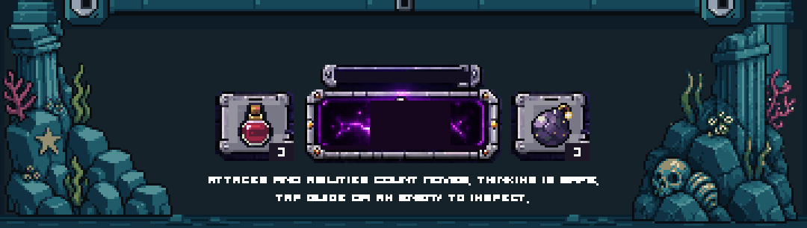
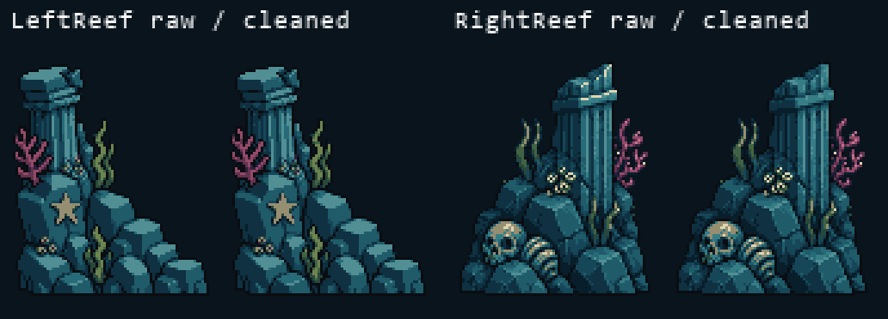
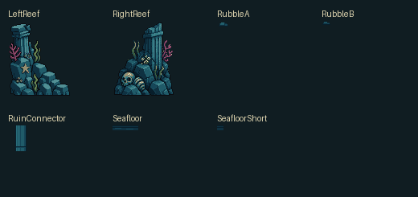
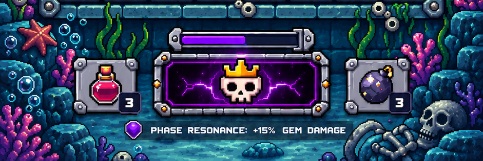

One cohesive rock-and-ruin formation per side, with attached marine growth and a partly buried relic. Native connectors join the accepted columns across both aspect ratios. Review candidate · art-only Unity scene · no production integration or merge.
Full report · Exact QA · Native manifest · Generation lineage
Accepted Stage06 compared with Stage07. Existing actors, blank board cells and controls are preserved. These are static art-review renders, not playable combat. Images display at their stored resolution; scroll for larger captures.

Each pair: raw on the left, cleaned on the right. Both 80×96 silhouettes remain exact. Warm masonry flecks are subdued; coral, starfish and relic colors retain their material identity.


Seven separate assets, including the reused shaft profile and small native seabed/rubble pieces. No flattened environment texture.
Reference only. The actual shared HUD geometry is authoritative.

Unity validator, exact pixel mapping at six sizes, source roundtrips, connected corner masses, structural contacts, viewport clearance and protected-file checks passed. Top scene, portrait, board frame/cells, accepted sides and shared HUD remain unchanged. No animation or device testing in this stage.
PixelLab: 10 generations spent · 558.20 remaining · 84 cumulative. Stage08 has not started.